Year-round sunshine • Crystal-clear seas • Coastal elegance • Endless horizons
Indulge in Sri Lanka’s exquisite tropical beaches, where golden sands meet crystal-clear waters under year-round sunshine. Unwind in serene coastal settings, enjoy private moments by the ocean, and witness breathtaking sunsets that paint the horizon in gold. From exclusive whale-watching experiences to elegant seaside dining and timeless coastal heritage near Galle Fort, every beach escape in Sri Lanka is crafted for comfort, beauty, and effortless luxury.
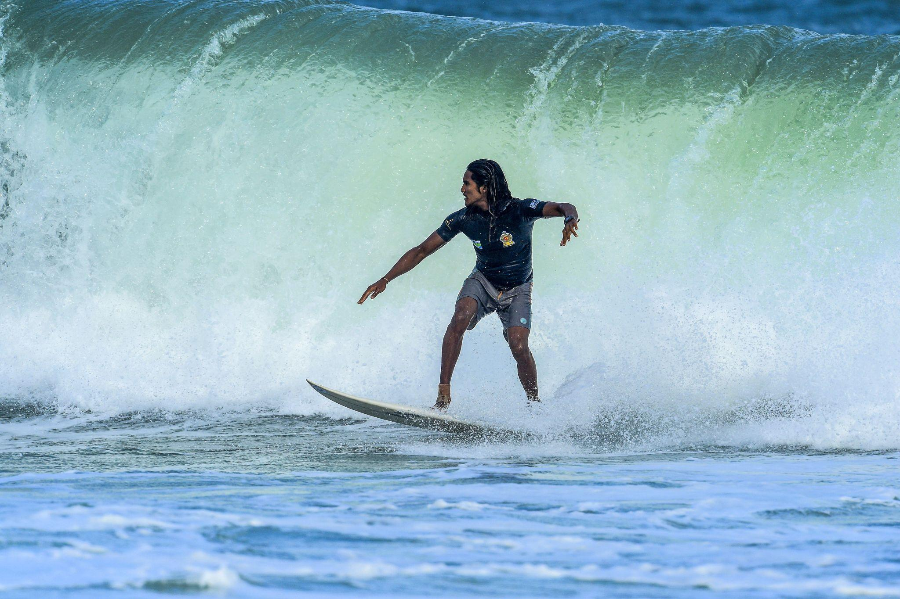
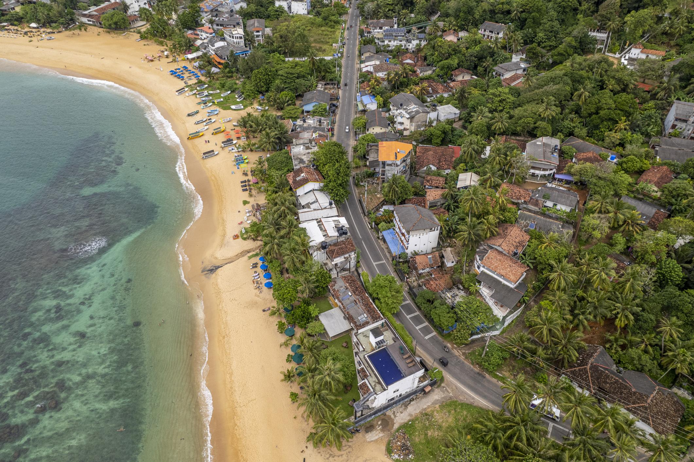
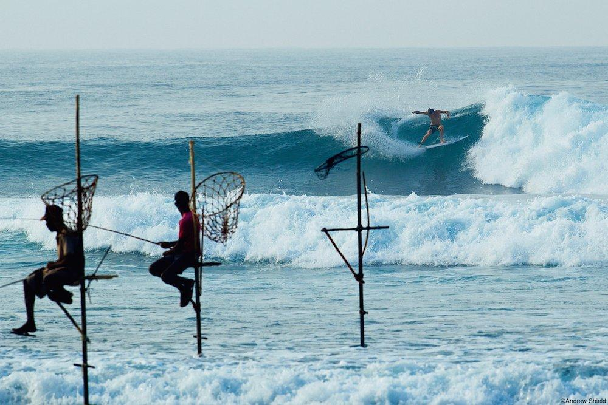
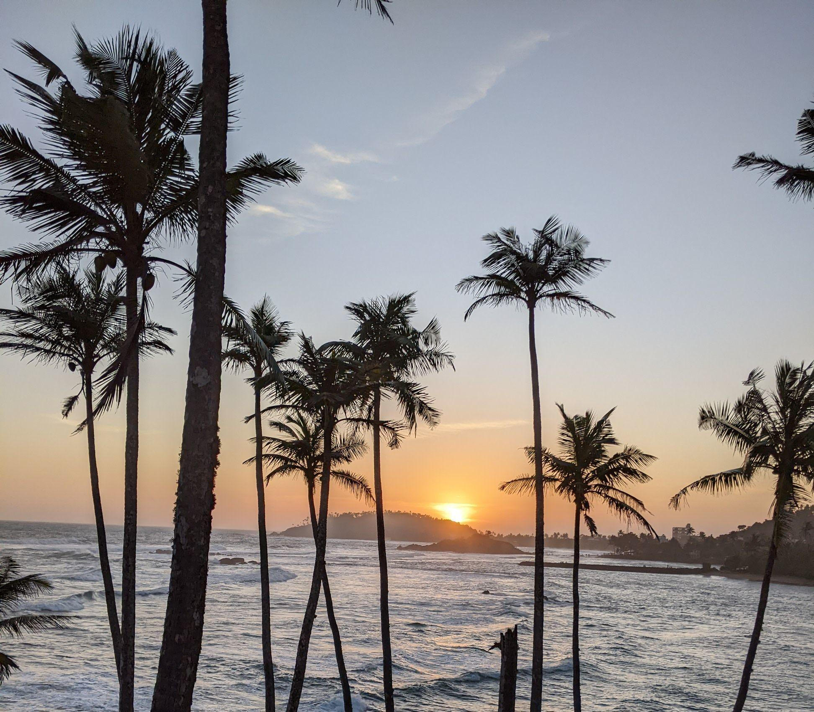
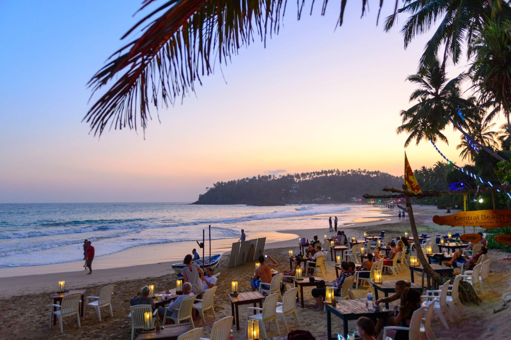
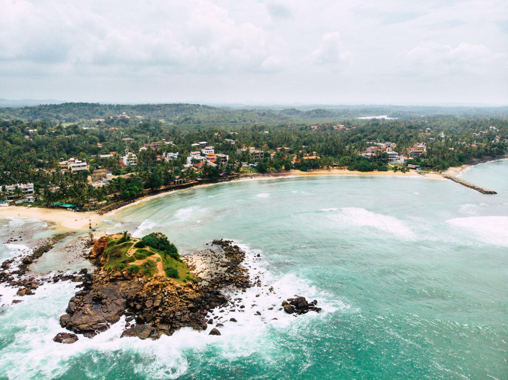
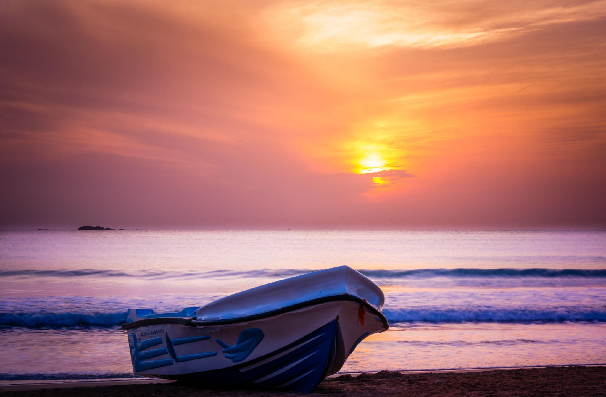
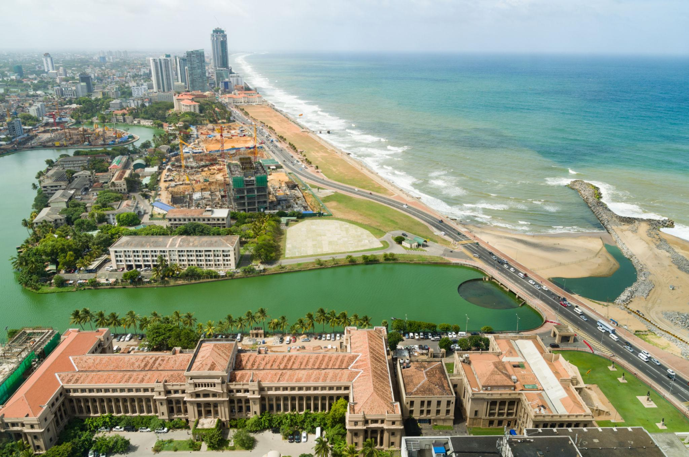

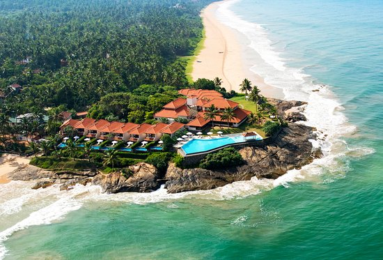
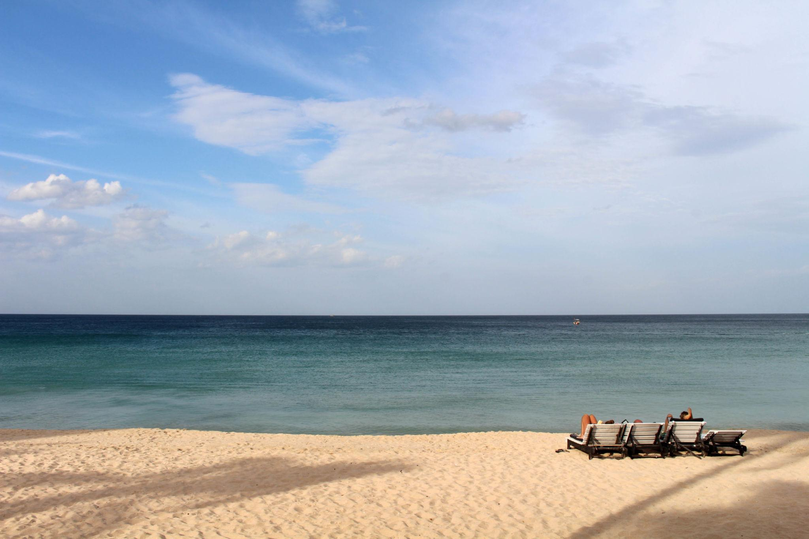
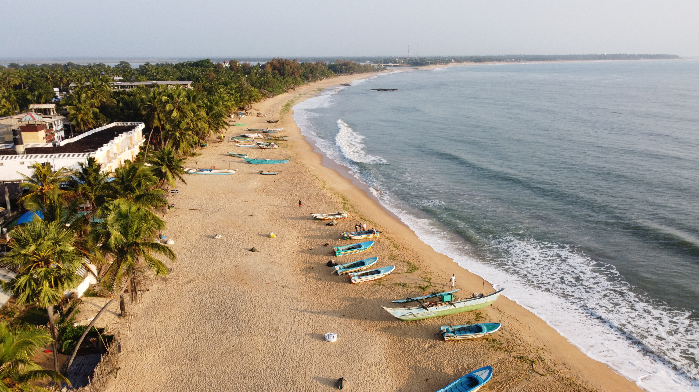
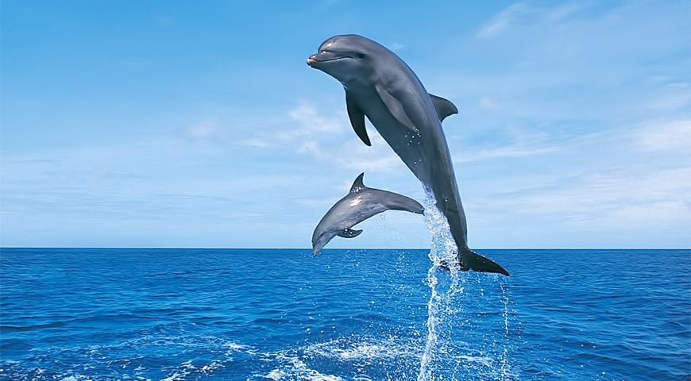
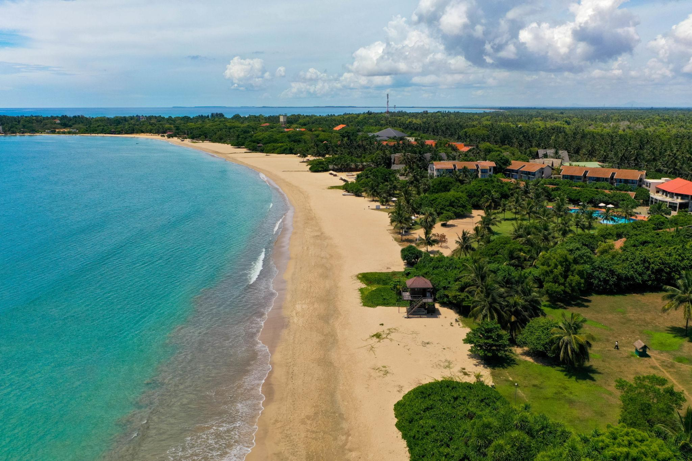